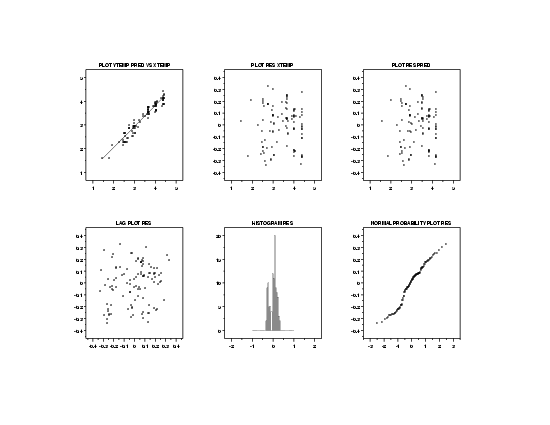
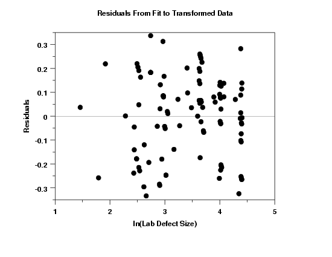

|
4.
Process Modeling
4.6. Case Studies in Process Modeling 4.6.2. Alaska Pipeline
|
|||
| Transformations |
In regression modeling, we often apply transformations
to achieve the following two goals:
|
||
| Plot of Common Transformations to Obtain Homogeneous Variances |
The first step is to try transforming the
response variable to find a tranformation that
will equalize the variances. In practice,
the square root, ln, and
reciprocal transformations often work well for
this purpose. We will try these first.
In examining these plots, we are looking for the plot that shows the most constant variability across the horizontal range of the plot. This plot indicates that the ln transformation is a good candidate model for achieving the most homogeneous variances. |
||
| Plot of Common Transformations to Linearize the Fit |
One problem with applying the above transformation is that
the plot indicates that a straight-line fit will no longer
be an adequate model for the data. We address this problem
by attempting to find a transformation of the
predictor variable that will result in the most
linear fit. In practice, the square root, ln, and
reciprocal transformations often work well for
this purpose. We will try these first.
This plot shows that the ln transformation of the predictor variable is a good candidate model. |
||
| Box-Cox Linearity Plot |
The previous step can be approached more formally
by the use of the
Box-Cox
linearity plot. The α
value on the x axis corresponding to
the maximum correlation value on the y axis indicates the
power transformation that yields the most linear
fit.
This plot indicates that a value of -0.1 achieves the most linear fit. In practice, for ease of interpretation, we often prefer to use a common transformation, such as the ln or square root, rather than the value that yields the mathematical maximum. However, the Box-Cox linearity plot still indicates whether our choice is a reasonable one. That is, we might sacrifice a small amount of linearity in the fit to have a simpler model. In this case, a value of 0.0 would indicate a ln transformation. Although the optimal value from the plot is -0.1, the plot indicates that any value between -0.2 and 0.2 will yield fairly similar results. For that reason, we choose to stick with the common ln transformation. |
||
| ln-ln Fit |
Based on the above plots, we choose to fit a ln-ln model.
Parameter Estimate Stan. Dev t Value B0 0.281384 0.08093 3.48 B1 0.885175 0.02302 38.46 Residual standard deviation = 0.168260 Residual degrees of freedom = 105 Lack-of-fit F statistic = 1.7032 Lack-of-fit critical value, F0.05,76,29 = 1.73Note that although the residual standard deviation is significantly lower than it was for the original fit, we cannot compare them directly since the fits were performed on different scales. |
||
| Plot of Predicted Values |
The plot of the predicted values with the transformed data indicates a good fit. In addition, the variability of the data across the horizontal range of the plot seems relatively constant. |
||
| 6-Plot of Fit |

Since we transformed the data, we need to check that all of the regression assumptions are now valid. The 6-plot of the residuals indicates that all of the regression assumptions are now satisfied. |
||
| Plot of Residuals |

In order to see more detail, we generate a full-size plot of the residuals versus the predictor variable, as shown above. This plot suggests that the assumption of homogeneous variances is now met. |
||

{kind=link}
{kind=link}
{kind=link}
{kind=link}
{kind=link}
{kind=link}